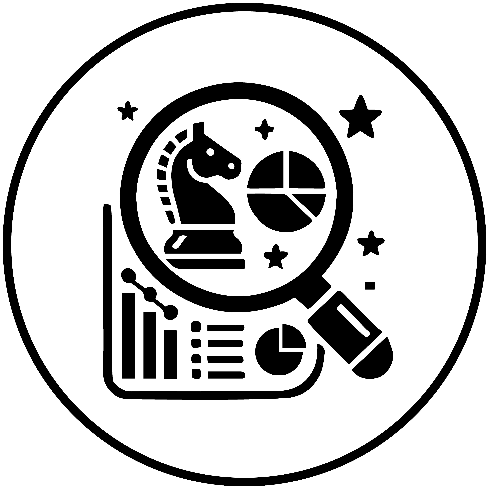

Contribution : 70% (n=3→2)
Role : Establishing channel direction, video planning and editing
ㅤㅤㅤManaging YouTube Account (video uploads and analysis)
Skills Gained Through the Project :

Strategic planning and analysis skills

Creative content production capabilities

Project management and collaboration skills
During the early stages of the project, I established the strategic direction of the channel.
Through market analysis and trend research, I proposed incorporating external short-form content. This led to the production of short-form content based on popular games at the time, significantly increasing the channel's views and subscribers.
Analysis showed that in April, views were 14,000 higher than usual, and the number of subscribers was 600% more than 28 days prior, driving the channel's initial growth.
Additionally, to promote the club, I led an internal video production project.
To maximize promotional effectiveness, I comprehensively managed the planning, filming, and editing of six short-form contents, ensuring each piece effectively reached the target audience. This process helped increase the club's visibility and communicated our active engagement.